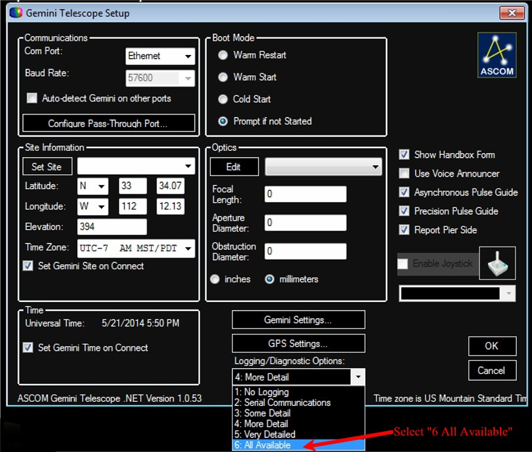
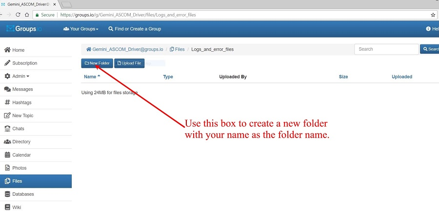

| Error Reporting Procedures |
| It is really hard to troubleshoot a remote computer
or mount without seeing the problem.
So please give us as much information as possible. Please do not leave out details. What might not see important to you, might be just the ticket that lets up know what is wrong. |
| Click on for Error Reporting for Gemini-2 itself | Click on for Error Reporting for ASCOM Driver |
| Reporting Error for Gemini-2 |
|
When reporting problems that include the Gemini-2
controller or it's hand controller the following information would be
very helpful to help diagnosis the problem. All of the below will greatly help us understand your problem better, and make better decisions on how to guide you. 1. Your name and how to contact you. If you do not want to post this on the users group please use: Please include you phone number if you would like a call and the best time to call. 2.Which Gemini version you have. Gemini-1 with telephone connectors for motors. Gemini-1 with round motor plugs, The original Gemini-2 version, or the New Gemini-2 Mini version. If you are running the 5.2 Firmware (Gemini-2 either version), on the hand controller please go to the "Menu-->HC-->Info" and tell us which graphics chip your hand controller has. 3. Firmware Versions - Please include the dates of the firmware. instructions for finding these The main way to tell the firmware version is from the web interface. See tellfirmwareversion.html. If you have not connected to the web interface click here for instructions. The hand controller can now also tell you the firmware dates. Go to Menu-->HC-->INFO. 4. Your Latitude and Longitude as you entered it in the hand controller - /quickstart/startup-site.html Also your location by City State and country. 5. The Time offset you entered into your hand controller - /hc/E023.html 6. Your mount type 7. Your power source and voltage and the battery voltage of the internal battery as reported in the web interface. Also the voltage as reported on the web interface, http://gemini/ad.cgi or http://Your Gemini2 IP address/ad.cgi 8. Your limit setting from hand controller - /hc/En-limits-safety.html 9. Your computer operating system if you have the Gemini-2 connected to a computer. 10. There are also log files internal to the gemini-2. To get these logs run the following command. It should take you to the web interface log files. Replace the IP address in the command with your units IP address. http://192.168.0.111/sd.cgi?DN=LOGS You will need to log in with admin and no password. Please send the Gemini.log, EA_Enc.log, and Pointing.Dat files. Just click on them for them to provide a download link. https://groups.io/g/Gemini-II/files/User_Logs_error_files_and_suggestions make a directory named with your handle or last name. Then post the files in the new directory you made. An alternate way to get the files is: If you know how, the log files from the micro-SDcard inside the Gemini-2. You can normally get to these if using windows, by typing ftp://admin@gemini into Windows Explorer (not the web browser), and then copy the Logs (In the logs folder) to your desktop, zip it and the upload it to the files section in the gemini-2 group. To do this: go to: https://groups.io/g/Gemini-II/files/User_Logs_error_files_and_suggestions make a directory named with your handle or last name. Then post the files in the new directory you made. 11. If the problem is an alignment problem, please tell use each star you use, and the error reading after adding that star to the alignment model. This can help determine what is also going on. 12. Please give a clear description of the symptoms you are seeing. 13. All the steps that we can take to duplicate the problem is very important. All stars and pointing location you use, etc. 14. If your problem involves the Gemini.net ASCOM driver in any way, please follow the instructions below to report them. 15. Please place a message in the Gemini-2 users group telling us about the email you sent and also the error and what procedures led up to the error. Please note all the steps you took will greatly help in determining the errors. 16. After your problem is fixed, Please come back and delete your log files, as the files section can only hold 100Mbytes for all files stored there. The admin will delete your files after about a year period. |
| If the on-line users group does not provide enough help then I suggest contacting Losmandy: You can call them at 747-283-1075 or FAX: 747-283-1078. You can email Scott at scott@losmandy.com or Russell using russell@losmandy.com |
| Reporting Error for ASCOM Driver |
| Pleases follow this error report procedure below, in
case you do fine anything that was missed. Please provide as much information as noted in the above section for Gemini which will help also determine ASCOM errors. Lack of information, really makes it hard to troubleshoot for you. 1. All of the info from the above section please. 2. Your name and how to contact you. If you do not want to post this on the users group please use: Please include you phone number if you would like a call and the best time to call. I will forward your contact info to the writer of the ASCOM Gemini.net driver. 3. The default error logging setting is 2. If you are experiencing error conditions, please change this to a setting of 6. You can find this setting on the Setup menu directly below the GPS setting window. See Figure 1. |
|
 Figure 1 |
|
4. After changing it to a level of 6, please try and duplicate the error again. Also please use either the Windows snipping tool in Vista, Win 7, Win10, or Alt-PrtSc to capture any error messages and post them to a Wordpad file, and save it as a rich text document, zip them and then post them. To do this: go to: https://groups.io/g/Gemini_ASCOM_Driver/files/Logs_and_error_files make a directory named with your handle or last name. Then post the files in the new directory you made. 5. You will normally find your log files in C:/..../My documents/ASCOM Where /..../ is your user name and is found under c:/users They will be by date. 6. Please place a message in the Gemini ASCOM users group telling us about the email you sent and also the error and what procedures led up to the error. Please note all the steps you took will greatly help in determining the errors. 7. After your problem is fixed, Please come back and delete your log files, as the files section can only hold 100Mbytes for all files stored there. The admin will delete your files after about a year period. 8. Here is what the Groups.io page should look like after you log in to Groups.io |
|  |
|
The box indicated by the red arrow is used to create a new folder. The long box to the right of "create new folder box" that says
"upload" is used to upload a file. Once you click on it, give the folder your handle or last name, then click on the folder to make sure you enter the folder you just created. Then use the upload button to upload your file. |
|
Thanks The ASCOM Gemini.NET developers. |